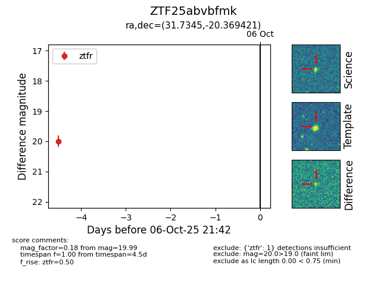

FINK: ZTF25abvbfmk
Lasair: ZTF25abvbfmk
ALeRCE: ZTF25abvbfmk
ZTF25abvbfmk (ztf,fink)
equatorial (ra, dec) = (31.7345,-20.36942)
galactic (l, b) = (195.5899,-71.47498)

last ztfr=19.99
1 ztfr detections